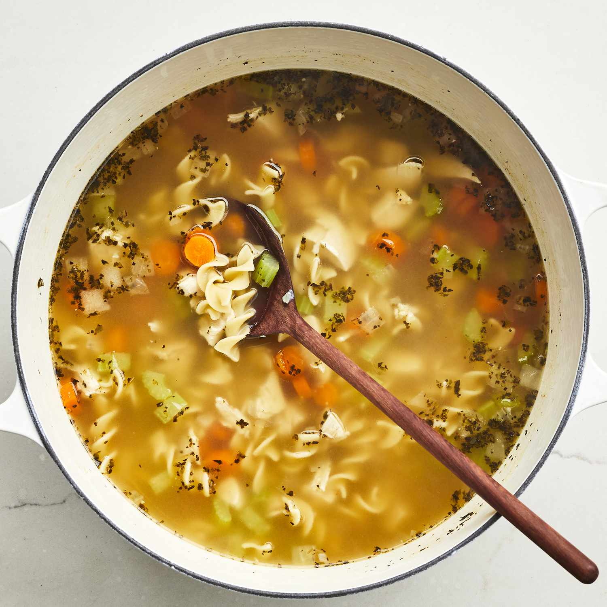

Quick and Easy Chicken Noodle Soup

A chicken noodle soup recipe that's a very easy, very good substitute for
when you don't have time to make your soup totally from scratch.
Ingredients
- Onions and Celery
- Broth
- Chicken
- noodles
- Carrots
Steps
-
In the first step of this chicken noodle soup recipe, diced onions and
chopped celery are cooked in butter until they're aromatic and tender.
-
This chicken noodle soup recipe calls for a mixture of chicken and
vegetable broths. If you're short on time or ingredients, you can just
use one or the other
-
Of course, you'll need chicken. If you have leftover rotisserie chicken,
you can use that in place of the cooked chicken breasts for a
budget-friendly shortcut.
-
Make sure you don't add the noodles too early, as cooking them too long
will make them mushy.
-
Carrots, which add a pop of bright color and flavor, are added at the
end of cooking so they stay crisp. You can add them to the sautéed
vegetables at the beginning if you like your carrots tender.